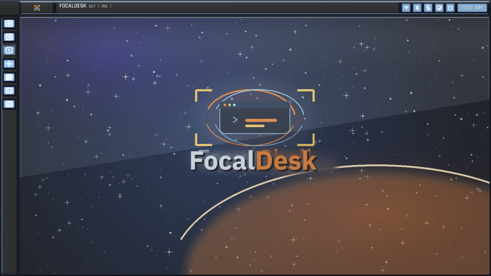
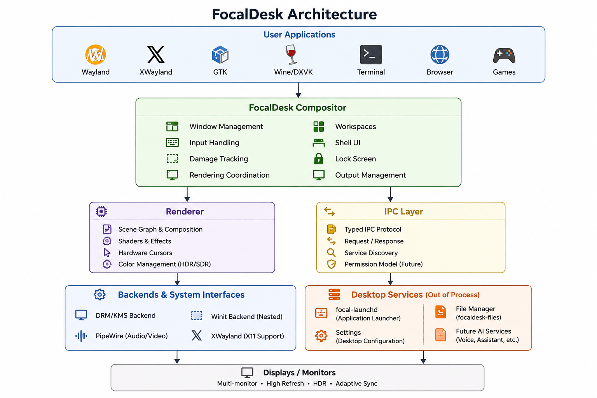
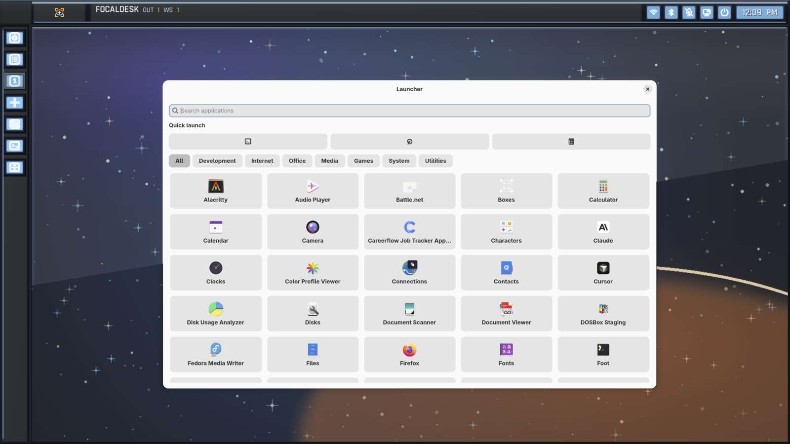
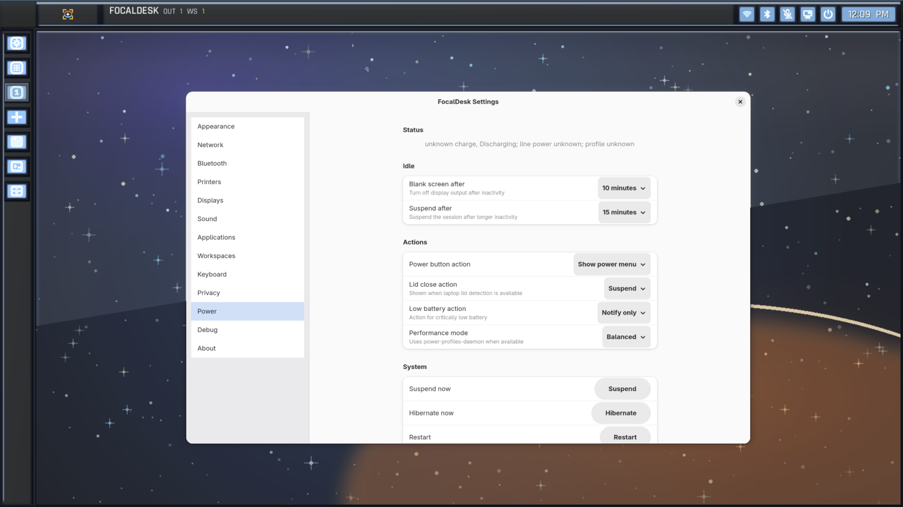
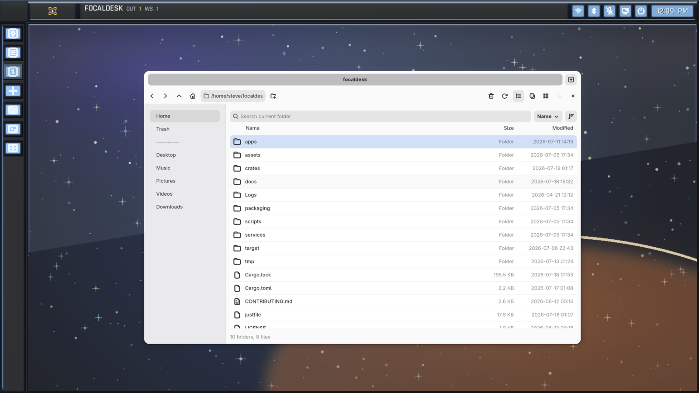
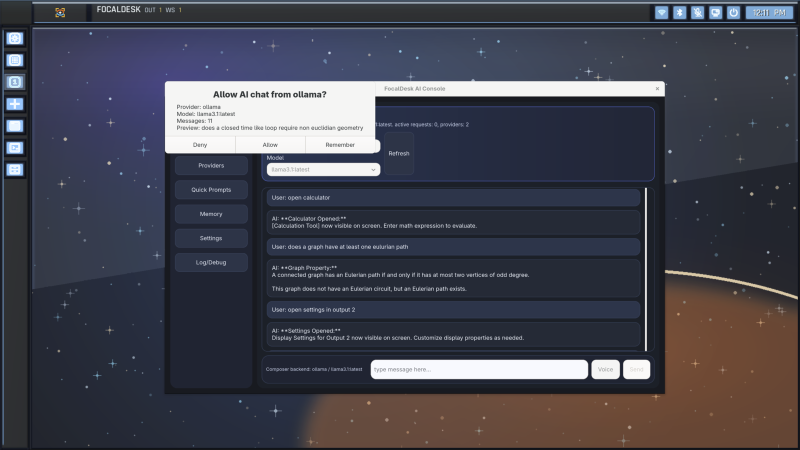
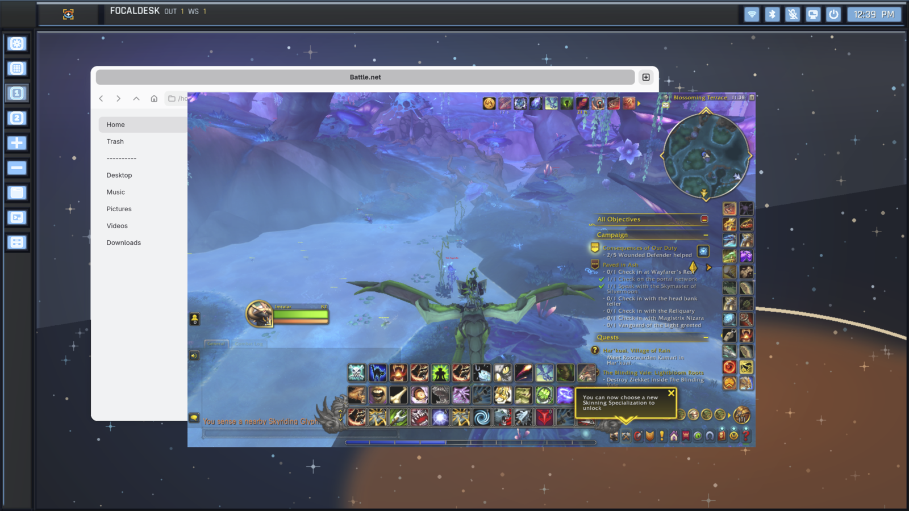

Product direction, systems architecture, Rust development, UI, integration, and testing.
Project case study
Alpha · Active development
Rust · Wayland · Smithay · OpenGL ES
FocalDesk
A custom Wayland desktop environment built to explore what a fast, cohesive, keyboard-friendly Linux desktop can be—without treating the compositor as a monolith.

Compositor, shell, display manager, services, native applications, capture, and AI integration.
Used daily by its creator, with active development and expected rough edges.
The challenge
Build a desktop, not just a compositor demo.
A usable Linux desktop has to coordinate rendering, input, windows, workspaces, applications, system controls, capture, and session state. Putting all of that inside one compositor process would make failures harder to isolate and future automation harder to control.
FocalDesk keeps the compositor focused on the display and interaction loop while recoverable services handle application launching, power, notifications, dialogs, controls, settings, and AI requests.
System design
A compositor-centered, service-oriented architecture
Native Wayland and XWayland clients meet at the compositor. Rendering and hardware backends stay close to the frame loop, while typed IPC creates a boundary around supporting desktop services.

Keep the frame loop focused
Window management, input, rendering, outputs, and shell behavior remain the compositor's core responsibility.
Isolate supporting services
Launch, power, notifications, dialogs, and controls run out of process and communicate through explicit IPC.
Gate automated actions
AI requests use visible permission prompts and recorded decisions instead of receiving unrestricted desktop access.
Working system
First-party tools share one desktop language.
The project includes native applications and services that exercise the architecture as a system rather than as isolated prototypes.




Compatibility proof
Tested with real graphics workloads.
Running complex applications through Wine and DXVK validates more than appearance. It exercises XWayland, Vulkan translation, GPU acceleration, input handling, and high-performance rendering in the compositor.

Where it stands
Useful today, deliberately labeled alpha.
Working now
- Native Wayland compositor and desktop shell
- Display manager, greeter, and session services
- Launcher, settings, file manager, and AI Console
- XWayland, Wine/DXVK, and PipeWire capture
- Typed service boundaries and permission prompts
Still evolving
- Installation and packaging experience
- Hardware coverage and compositor stability
- Feature completeness across native applications
- Public APIs and IPC contracts
- Repeatable releases for broader daily use
Go deeper
Read the engineering documentation.
The repository contains the living build, architecture, IPC, rendering, workspace, and contributor documentation.